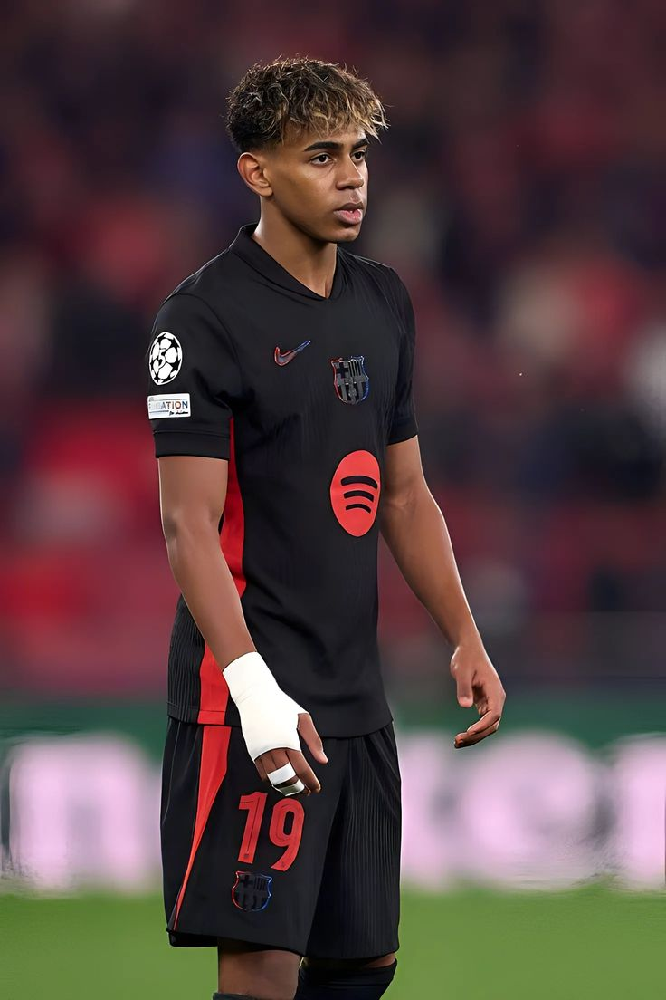

Nationality: 🇪🇸 Spain
Position: Forward
Jersey Number: #19
Date of Birth: 13 July 2007
Height: 1.80 m
Preferred Foot: Left
Lamine Yamal is one of FC Barcelona's brightest young stars. Known for his pace, dribbling, creativity and finishing, he has quickly become an important player for both Barcelona and Spain.
Club: FC Barcelona
Appearances: 100+
Goals: 20+
Assists: 25+
Debut: 2023
Lamine Yamal continues to impress fans with his performances for Barcelona and Spain.